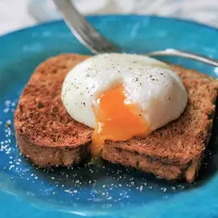

Zak's Poached Egg on Toast

Bad Dad Zak's World Famous Poached Egg on Toast!
Ingredients
1 or 2 pieces of bread for toasting
Steps
- Bring about an inch of water to boil in a sauce pan or fry pan
- Once water is boiling, but bread to toast
- Crack eggs into boiling water - cook until egg is white
- Once toast is ready, spread mayonaise and place cheeder cheese over top
- When eggs are cooked, use a spatula to remove eggs from water
- Place eggs on toasted bread with mayonaise and cheese
- Add salt and pepper to taste
Enjoy once cheese starts to melt!
Go Back